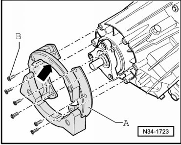
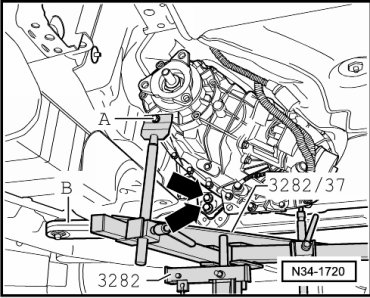
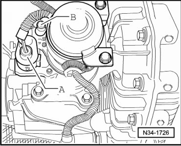
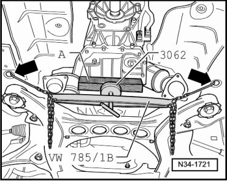
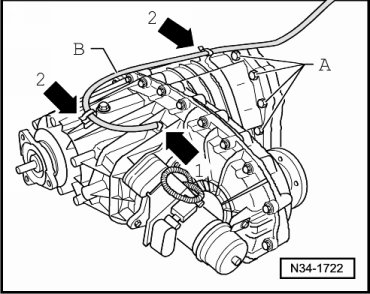
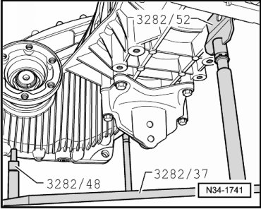
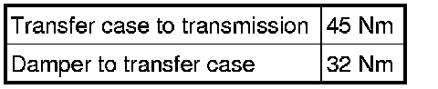

Transfer Case
Transfer Case
Special tools, testers and auxiliary items required
• Transmission support (VW 785/1B)
• Thrust pad (3062)
• Transmission support (3282)
• Adjustment plate (3282/37)
• Torque wrench (VAG 1331)
• Torque wrench (VAG 1332)
• Engine and transmission jack (VAG 1383/A)
• Grease for clutch disc shaft splines (G 000 100)
Removing
- Raise vehicle.
- Remove noise insulation on bottom of transmission.
- If an underbody impact guard is located beneath the transfer case, remove it.
- Remove the rear section of the exhaust system and, if necessary, the catalytic converters (V10 TDI):
- Remove the rear driveshaft. Refer to --> [ Rear Driveshaft ] Rear Driveshaft.
- Remove the bolts for the front driveshaft at the front final drive and at the transfer case.
- If equipped with a vibration damper - A -, remove damper from transfer case (bolts - B -).

Before removing, mark the installation position of the damper relative to transfer case. The text "TOP" - arrow - must point upward.
- Set up the engine and transmission holder (VAG 1383/A) with transmission support (3282), adjustment plate (3282/37) for " 0AD" transmission and support elements as follows:
- Place adjustment plate (3282/37) on transmission support (3282) (adjustment plate only fits in one position).
- Align transmission support arms to correspond with the holes in adjustment plate.
The symbols on the adjusting plate indicate the support elements required, the arrow points forward.
- Move the engine and transmission jack (VAG 1383/A) with transmission support (3282) under the transmission, align adjustment plate parallel to transmission and support transmission.

- Secure transmission on transmission support (3282) using bolt - A -.
- Remove transmission carrier - B - from structure.
- Then, remove transmission carrier from transfer case bracket - arrows -.
- Remove front driveshaft.
- Remove side and lower transmission/transfer case bolts.
- Disconnect connector - A - and - B - from differential motor.

- Lower engine and transmission assembly about 60 mm using the engine and transmission holder (VAG 1383/A).
- Secure engine and transmission assembly on structure - arrows - using transmission support (VW 785/1B) as follows:

- Lubricate contact surface of thrust pad of (VW 785/1B) with multi purpose grease.
- Place thrust plate (3062) on the thrust pad. The smaller diameter of (3062) faces toward thrust pad.
- Place a block of wood - A - between transmission and thrust pad (3062).
- Remove transfer case/transmission upper bolts - A -.

- Remove - arrow 1 - and unclip - arrow 2 - breather line - B - from transfer case.
- Separate transfer case from transmission.
- Lower the transmission.

Installing
Install in reverse sequence; note the following points:
- Check if alignment pins for centering the transmission/transfer case are fitted in transmission; install if necessary.
Always replace O-ring seal between transfer case and transmission - arrow -. Lubricate lightly.

Lubricate transfer case input shaft and transmission output shaft with grease for clutch disc shaft splines (G 000 100).
Push transfer case completely onto transmission, ensuring that transfer case input shaft splines are centered as they are guided onto the transmission output shaft.
If splines are correctly positioned and centrally aligned, the transfer case will slide to stop against transmission.
Do not use bolts to pull transfer case onto the transmission, otherwise transfer case will distort.
- Install front driveshaft. Refer to --> [ Front Driveshaft ] Removal and Installation.
- If equipped, install vibration damper - A - to transfer case and tighten bolts - B -.
The word "TOP" - arrow - must point upward.
- Install rear driveshaft. Refer to --> [ Rear Driveshaft ] Rear Driveshaft.
- If an underbody impact guard is located beneath the transfer case, install it.
- Check gear oil level in transfer case. Refer to --> [ Transfer Case Gear Oil Level, Checking ] Service and Repair.
- Install exhaust system:
Tightening Specifications

Bracket to transfer case, bracket to transmission and transmission carrier --> [ Tightening Specifications ] Transmission Carrier and Bracket.